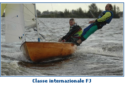
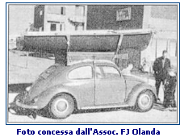

CLASSE INTERNAZIONALE FJ di Luigi Candela
INTRODUZIONE
Il primo approccio con la classe FJ l'ebbi nel 1974 e si trattava di uno scafo del cantiere Alpa di colore bianco scafo e poperta. Era della Società Canottieri Palermo in affidamento agli allievi che avevano terminato il secondo corso. Alla seconda veleggiata nella zona sud del porto con mio cugino Renato si ruppe il timone che si rivelò marcio. La nostra esperienza non ci consentiva di navigare senza timone. La barca virava e strambava da sola finchè ci venne in aiuto un pescatore che ci trainò fino al pontile del club. La barca venne poi radiata dalla flotta del club e demolita.
Dopo questo non esaltante inizio passarono 15 anni prima di riscoprire questa particolare deriva. Nel gennaio del 1989 comprai un FJ Alpa, ita 3747 che serviva alla scuola di vela che iniziava a svolgere la sua attività per la Compagnia delle Derive presso l'isola di Ca' Roman tra la laguna e il mar Adriatico. In primavera se ne aggiungeva un'altro del Cantiere Clipper.
Dal 1989 al 1993 queste barche furono impiegate intensamente in corsi di vela, regate sociali e zonali. Attorno agli scafi della scuola si aggiunsero quelli degli ex allievi. Nacque un intensa attività di regate zonali. Nell'agosto 1993 io e mio fratello Alessandro partecipammo al Campionato di classe FJ di Spotorno (Liguria).
La scafo pesava oltre 100 kg, lo spinnaker era tagliato male e il rig di coperta spartano ma completo.
Si andò per conoscere l'ambiente della classe e le barche. Fummo soddisfatti per l'aria di sana attività sportiva che si respirava e perchè i risultati superarono le nostre aspettative nonostante una prova non svolta per stanchezza: 16 su 38. Mi colpì l'ampio margine per migliorare anche vecchi scafi rendendoli competitivi quanto i nuovi e l'eleganza di quelli in legno.
STORIA
Il "Flying Dutchman Junior" (questo il suo nome in origine) fu progettato in Olanda da Van Essen, noto disegnatore di barche a vela, committente e co-progettista fu Conrad Gulcher, olimpionico olandese della classe FD.
Per molti anni Gulcher e Van Essen collaborarono nella gestione delle classi FD e FJ. Gulcher fu una forte guida per la classe FJ fino al 1989, anno in cui morì.
Il primo FJ costruito in lamellare di legno, e fu testato in acqua nel dicembre del 1955.
Lo scopo originale del "Flying Dutchman Junior" fu di servire da trainer per i giovani velisti da avviare all'olimpica Flying Dutchman (FD). Il FD era più grande, più veloce, più impegnativo per il fisico della sua sorella più giovane (FJ). Il regolamento di classe FJ inoltre permetteva (e permette ancora) molte delle stesse innovazioni tecniche del FD, e la barca era (ed è ancora) ideale per insegnare ai principianti le regolazioni, il rake e la flessione dell'albero, così importanti ai massimi livelli dello sport velico.
In Italia il primo FJ fu portato da Franco Boido, già promotore del FD, nel 1956 a Priaruggia (Genova). La barca si diffuse rapidamente e nel 1959 si disputò il primo Campionato Italiano.
..............continua
|